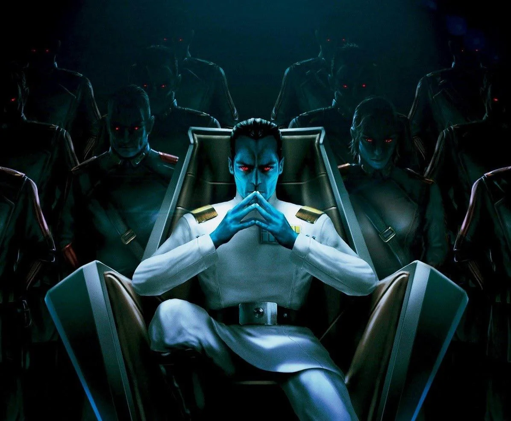

About Thrawn
Mitth'raw'nuruodo, better known as Thrawn was a Chiss Grand Admiral within the Galactic Empire who was known for his intelligence, strong tactical insight, and love of art of all kinds. Just before the outbreak of the Galactic Civil War, Thrawn was one of the most powerful officers within the Imperial Navy and one of the leaders within the Imperial High Command. The fact that he held such high positions within the Empire was remarkable for someone of his species.
Rise to the top
"After Thrawn is rescued from exile by Imperial soldiers, his deadly ingenuity and keen tactical abilities swiftly capture the attention of Emperor Palpatine. And just as quickly, Thrawn proves to be as indispensable to the Empire as he is ambitious; as devoted as its most loyal servant, Darth Vader; and a brilliant warrior never to be underestimated. On missions to rout smugglers, snare spies, and defeat pirates, he triumphs time and again—even as his renegade methods infuriate superiors while inspiring ever greater admiration from the Empire. As one promotion follows another in his rapid ascension to greater power, he schools his trusted aide, Ensign Eli Vanto, in the arts of combat and leadership, and the secrets of claiming victory. But even though Thrawn dominates the battlefield, he has much to learn in the arena of politics where ruthless administrator Arihnda Pryce holds the power to be a potent ally or a brutal enemy.
Written by Timothy Zahn